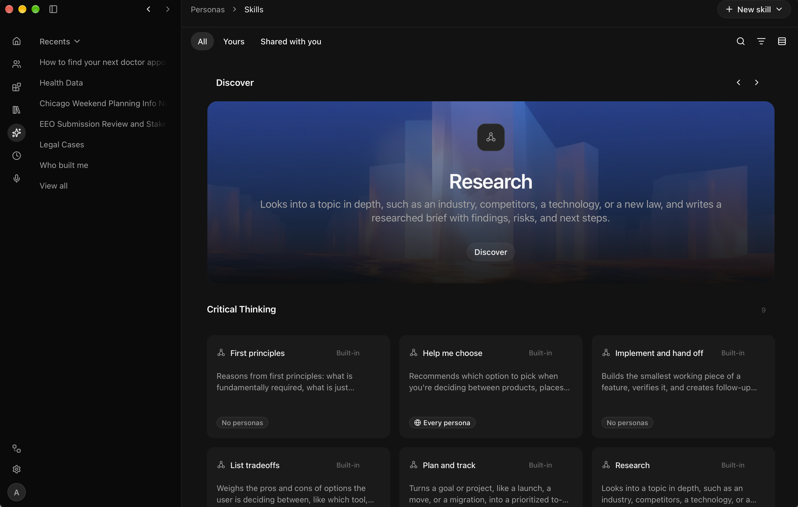
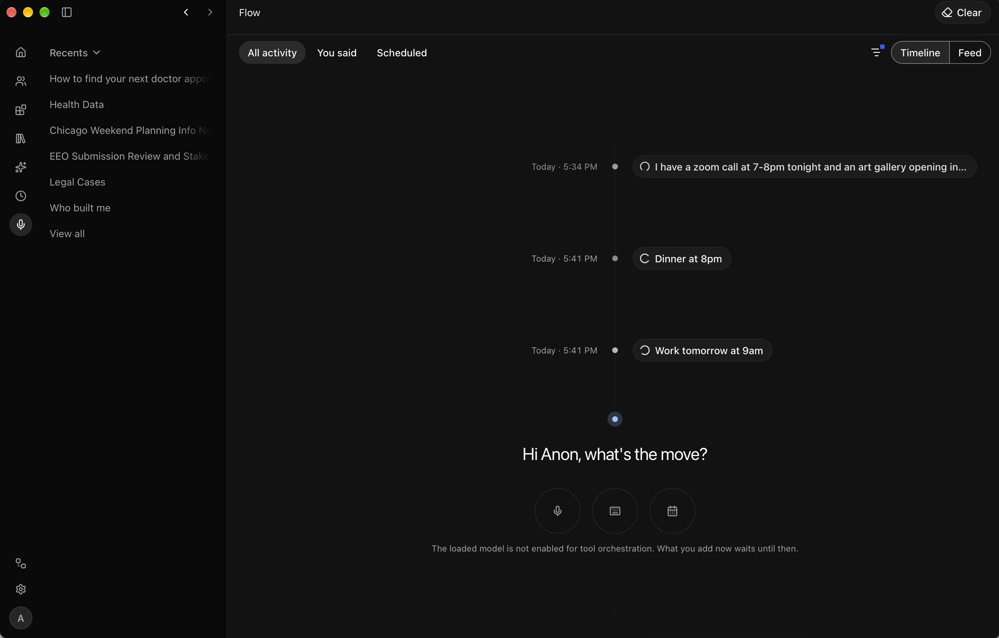
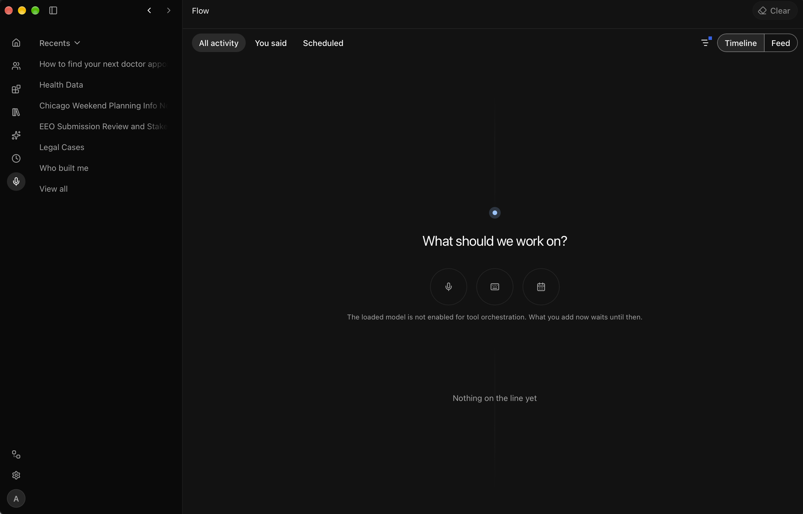
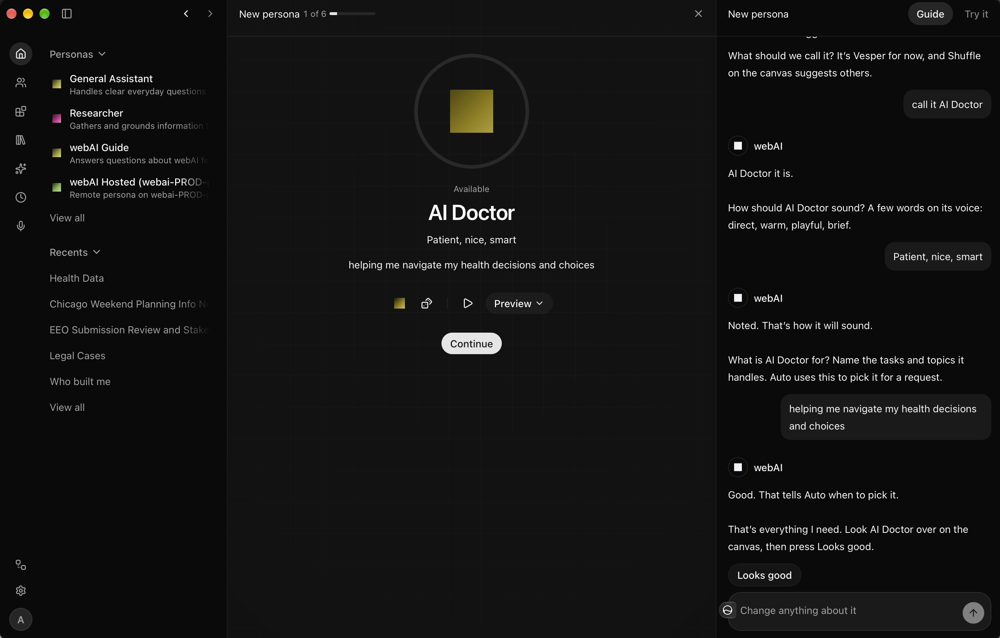
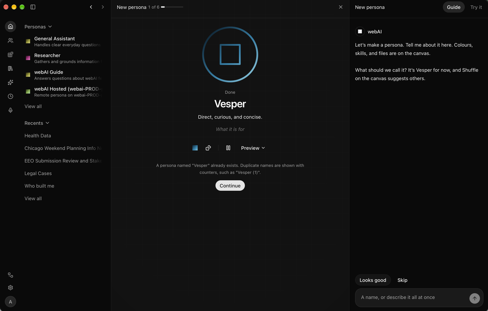
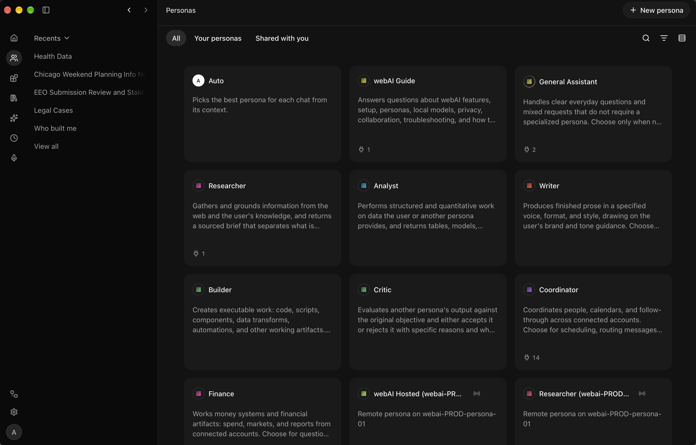
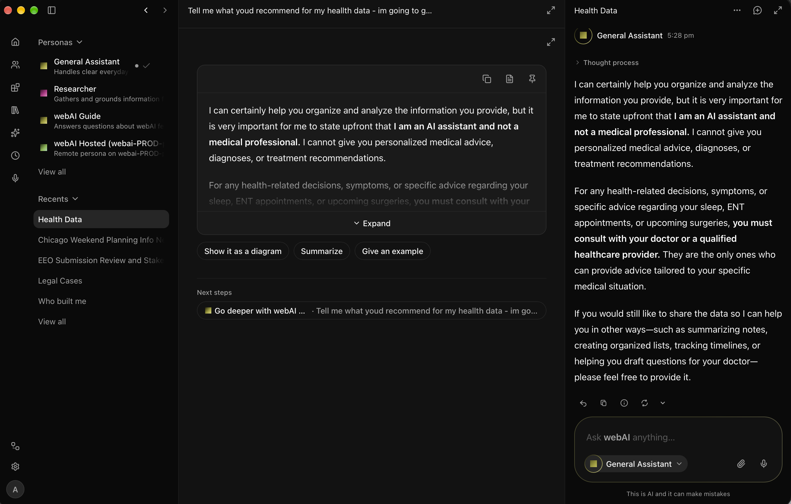
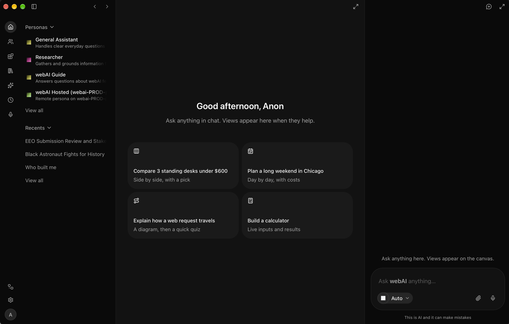

webAI Local AI App
A personal intelligence platform for creating, personalizing, and using AI on your own devices — no usage limits, with complete control over what leaves your machine.
Overview
webAI is a personal intelligence platform that allows individuals to create, personalize, and utilize artificial intelligence on their own devices with no usage limits. The app brings together advanced AI models with collaborative Spaces, enabling users to complete real work on their own machines while maintaining control over data sharing and collaboration.
The app introduces Personas — personalized AI assistants that learn from an individual’s habits, preferences, and expertise, providing tailored support and guidance whenever needed. webAI enables people to shape intelligence in a way that belongs to them: owning their own knowledge and insights, because the data never leaves the device unless they choose to share it.
The Problem
Intelligence that isn’t yours
Most AI experiences live in the cloud. That usually means usage limits, less say over where work product goes, and assistants that stay generic — helpful in the abstract, but not shaped by how someone actually works.
People who want to complete real work with AI still need collaboration and personalization, without giving up control over what is shared and what stays private.
Solution
Local models, Spaces, Personas
webAI runs advanced AI models on the user’s own devices, so work can happen locally with no usage limits. Collaborative Spaces support getting things done with others while keeping clear control over data sharing.
Personas learn from habits, preferences, and expertise, so support and guidance feel tailored — intelligence that belongs to the person using it, with complete control over what is theirs and how it is used.
Impact
Own your knowledge
webAI shifts personal AI from rented cloud capacity to intelligence that stays with you: on-device models, Personas shaped by your expertise, and sharing that happens only when you choose it.
The result is a way to shape and use AI for real work while keeping ownership of knowledge and insights — because the data never leaves your device unless you decide otherwise.
Capabilities
On-device AI · Personal Intelligence · Personas · Collaborative Spaces · Data Control · Privacy-first UX · Local Productivity
Selected Work
webAI in the app
Screens from the local app — Personas, Skills, Flow, Spaces, and on-device chat.







